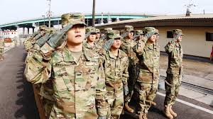
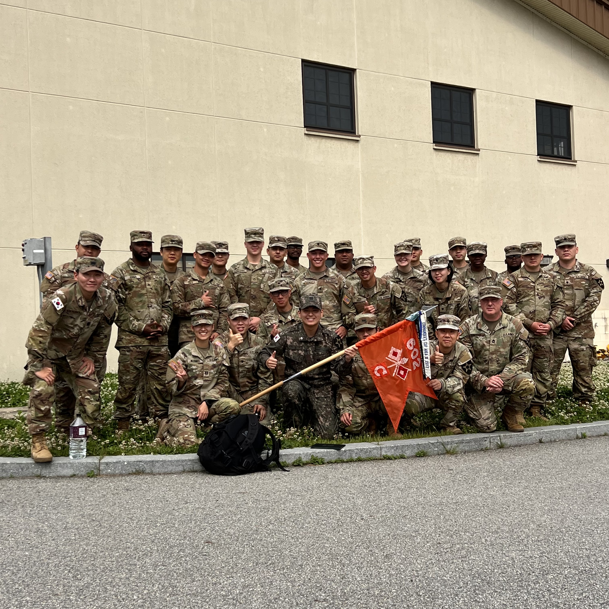

 (KTA 훈련을 받고 있는 예비 카투사 훈련병들의 모습)
2022년 11월 21일에 군입대 후, KATUSA(주한 미 8군 한국국 지원단)로 1년 6개월 동안 평택 CAMP HUMPHREYS에서
602항공 지원대대 / 찰리 중대 / 행정병으로 복무했고 2024년 5월 20일 육군 병장으로 만기 제대했습니다.
8주 간의 훈련를 마치고 602항공지원대대로 처음 배치 받았을 때의 기억이 새록새록합니다. 모든 것이 서툴고 낯설었습니다.
영어에 대해 자신감도 없었던 때라 말하기도 두려웠습니다. 하지만 저희 중대의 중대장과 일등상사의 행정 업무를 보조하고
통역업무 등을 수행하며 말하기 실력을 키웠고, 감각을 유지하기 위해 미군들에게 먼저 대화를 시도해보며 노력했습니다.
미군들과 대화를 하면 할수록 조금씩 자신감도 생기고 자연스러워지기 시작했던 것 같습니다.
정신 없이 주어진 행정업무와 중대의 기수로서 활동하고 나니 18개월이란 시간이 금방 끝나가 후임들과 작별인사를 하고 있었습니다.
어떻게 보면 정말 짧았던 시간이었습니다.
KATUSA로서 미군과 같이 복무했던 것은 정말 잊을 수 없는 경험이었고, 저에게 보는 시야를 넓게 만들어줬던 시간이었습니다.
이러한 경험들을 자양분 삼아 제가 배우고 있는 분야에서도 더욱 더 발전하고 성장하고 싶습니다.
 사진 1) 2024/5/20. 전역식 당일 부대를 나가기 전 중대원들과
사진 2) 2023/12/15. 나의 첫 중대장이었던 CPT timothy.Lee 의 이취임식(Change Of Command)을 마치며
첫 화면으로 가기
(change of command)
 사진 2) 2023/12/15. 나의 첫 중대장이었던 CPT timothy.Lee 의 이취임식(Change Of Command)을 마치며
사진 2) 2023/12/15. 나의 첫 중대장이었던 CPT timothy.Lee 의 이취임식(Change Of Command)을 마치며